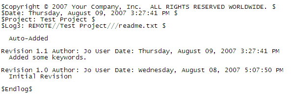

|
QVCS Enterprise Tutorial: Client Application BasicsChecking In a FileNow that you've made some edits to your file, you can check them in as a new revision in the associated archive. First, go ahead and press F5 to refresh the display; you'll notice that the lock icon has changed to show a delta symbol
As you can see, you have a number of options as to how you want Enterprise to handle the file you check in, but for now just enter a fitting description of the changes you made and click OK. Enterprise will now create the the 1.1 revision from the information in the work file. You'll also notice that the file is now unlocked and displays a status of "Current." Since your work file created the latest revision, there is no longer any difference between the two. When you checked in the file, Enterprise will have updated the keywords you just embedded. Open up the file to take a look at how they've changed. Rather than just the one-word strings you entered, you should now see something like this:  Since you only have two revisions, the $Log3$ keyword can only expand to show those two. However, as you make further revisions, $Log3$ will keep track of the most recent three. Enterprise will also keep the other keywords up-to-date whenever it fetches a revision. You'll also notice that the copyright line is just initialized to display a formulaic message. In the next step, we'll change it to display the correct copyright information. Changing the Copyright MessageTo change the copyright message, you'll have to edit the qvcs.keywords.properties file located in the qvcsBehaviorProperties directory. This directory is located within the directory where you installed the client. Open the qvcs.keywords.proeprties file with your preferred text editor and find the line where the copyright message is defined; this should be the thirteenth line or so. Then, change the message to the right of the = sign to whatever string you want to use as your copyright message. For example:
You don't have to worry about entering any dates; Enterprise will automatically determine the year range of the copyright from the oldest and newest revisions within a particular QVCS archive. Make sure to save your changes, and then go back to the client window. The change won't take effect until you next start the application, so go ahead and close it. Start the client again and log in. Finally, do a get on the file you edited to add the $Copyright$ keyword, and then open it with your preferred editor. The $Copyright$ keyword will have changed to display whatever message you defined. « Previous - Next » |
 , and the file status now displays "Your copy changed" to show that your work file is different from the latest revision in the archive. Now, select the file and click on the Check-in File
, and the file status now displays "Your copy changed" to show that your work file is different from the latest revision in the archive. Now, select the file and click on the Check-in File  toolbar icon. Doing so will bring up the following dialog:
toolbar icon. Doing so will bring up the following dialog:
| For the source code, see https://github.com/jimv39/qvcsos |